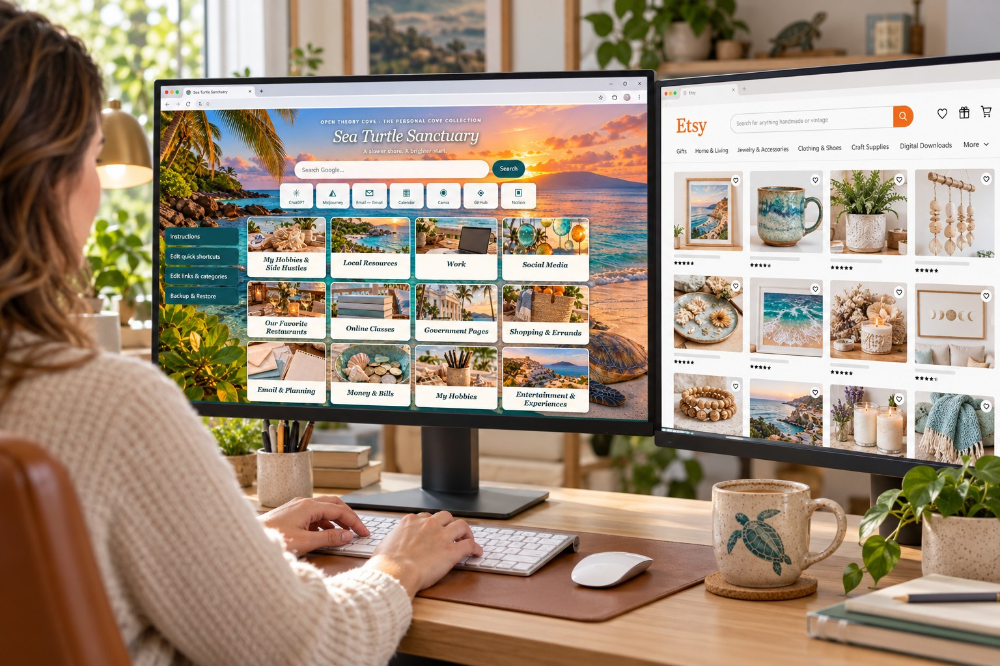

Sea Turtle Sanctuary A tropical browser home page with 12 editable categories, 120 starter links, editable quick shortcuts, Google search, a live local clock, and backup tools.
Digital ZIP download · The Personal Cove Collection
View product → Buy on Etsy ↗ IN DEVELOPMENT · PREVIEW ONLY Explore the Collection Find a useful project to customize for your own home, creative work or business.
Planned price: Varies
Product ZIP packages, full-size preview screenshots and finished PDF downloads will be added after testing. Checkout is intentionally disabled.
What a finished kit will include Sequenced prompts, setup instructions, editable design references, customization tips and troubleshooting steps.
Protect your information Do not upload account numbers, passwords or other sensitive credentials. Never connect a personal bank account to a budget experiment.